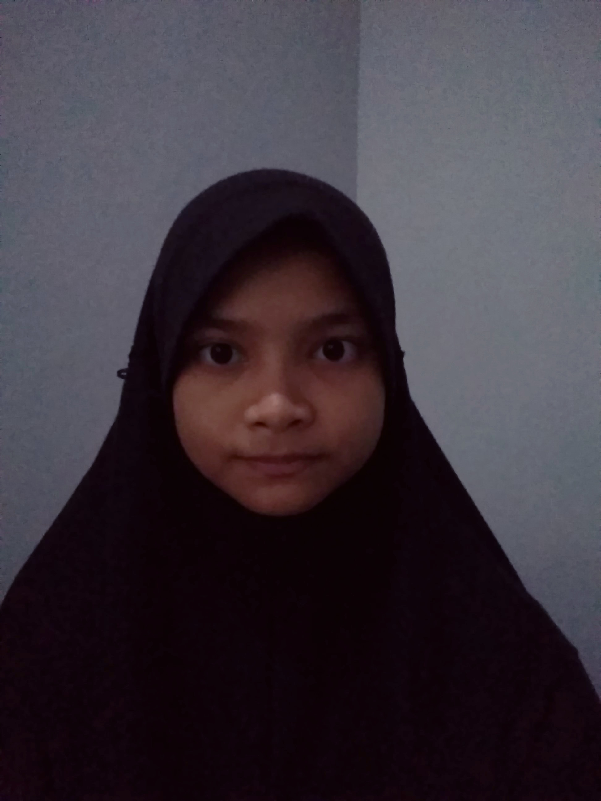

|  | ||
| Nama Lengkap | : | Sekar Maharani |
| Nama Panggilan | : | Sekar |
| Jenis Kelamin | : | Perempuan |
| Tempat, Tanggal Lahir | : | Palembang, 24 Februari 2004 |
| Sekolah | : | SMK-SMAK Bogor |
| Kelas | : | XI-1 |
| Hobi | : | Menulis |
| Cita-Cita | : | Penulis |
| Motto | : | Menjadi lebih baik, lebih baik daripada menjadi yang terbaik |
Maret 2020 merupakan awal dari hal yang tak pernah terduga. Berawal hanya dari libur 2 minggu berakhir pembelajaran secara daring hingga sekarang sampai waktu yang tidak dapat ditentukan. Tentunya bukan hal yang mudah untuk permulaan, dimana kita diharuskan lebih mandiri dalam pembelajaran, dituntut menggunakan aplikasi yang sangat jarang digunakan sebelumnya, mengenal beberapa hal baru dalam dunia pembelajaran online. Namun, sebagai seorang pelajar hal tersebut bukanlah penghalang untuk menuntut ilmu.
Melalui pembelajaran daring ini saya pribadi mendapatkan banyak hal yang sangat berguna dikemudian hari. Saya menjadi lebih madiri dalam mengatur waktu belajar, lebih mandiri mencari informmasi pembelajaran, lebih luas mencari pengetahuan terkait materi pembelajaran, dan masih banyak lagi. Namun, tentunya pembelajaran yang dilakukan sendiri akan berbeda dibandingkan pembelajaran yang dilakukan bersama teman.